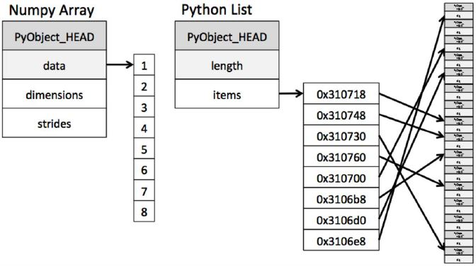
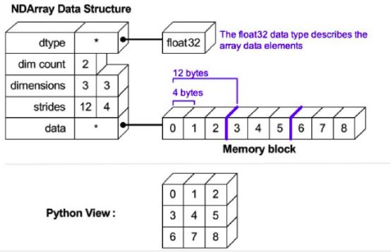
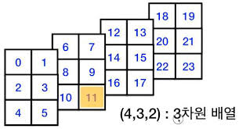

import numpy as np
np.__version__'1.21.5'November 1, 2022
파이썬 리스트는 실제 원소의 객체를 저장하는 것이 아니라 객체의 레퍼런스를 저장한다. 넘파이 모듈의 기본 배열은 다원 배열인 ndarray 클래스의 객체다. 이 배열은 하나의 자료형으로 만들어진 원소들을 보관하는 컨테이너이다.


넘파이는 위 그림처럼 일렬로 원소를 관리한다. 구체적인 설명이 없어 이해가 안 된다.
버전 확인: __version__
클래스 이름 조회: __name__
클래스 속성과 메서드를 관리하는 이름공간(namespace) 출력 -> var에 저장됨
ndarray 클래스에 정의된 속성과 메서드 확인. np.ndarray.__dict__와 np.ndarray.var의 차이를 잘 모르겠다.
for i in dir(np.ndarray): # dir -> 이름공간 내의 속성과 메소드 이름을 리스트로 반환
if not i.startswith("_"): # 파이썬 스페셜 속성과 메서드는 밑줄로 시작하니 이를 제외
if type(np.ndarray.__dict__[i]) != type(np.ndarray.var):
print(i, end=' ')T base ctypes data dtype flags flat imag itemsize nbytes ndim real shape size strides 다차원 배열은 실제 데이터를 관리하는 속성과 이 데이터의 정보를 관리하는 메타 속성을 구분해서 관리한다.
i = [1, 2, 3, 4]
arr = np.array(i)
print('type(arr): ', type(arr))
print('arr.data: ', arr.data)
print('arr.data.obj: ', arr.data.obj)
print('type(arr.data.obj): ', type(arr.data.obj))type(arr): <class 'numpy.ndarray'>
arr.data: <memory at 0x11002c7c0>
arr.data.obj: [1 2 3 4]
type(arr.data.obj): <class 'numpy.ndarray'>base는 다차원배열의 메모리를 공유할 때 원본 레퍼런스 저장. 동일한 배열을 공유하는 구조라서 base에는 아무 것도 없다는 말이 잘 이해되지 않는다.
b.base is arr.base -> True
None Nonendarry를 만들 때 자료형 지정
차원별 원소 개수, 차원 개수, 타입, 원소의 길이(byte), 원소의 총개수, strides 조회.
itemsize란 원소의 저장 공간 크기를 말하고 바이트 단위이다. 여기는 4byte이고 32 비트이다.
strides는 차원 별 크기를 반환한다. 2차원 배열에서 1차원은 한 행에 속하는 원소의 개수 * 4바이트. 2차원은 1개 원소의 바이트 크기다. 예를 들어 (2, 4) 배열에서 한 행에 속하는 원소의 개수는 4이므로 한 행의 크기는 4 * 4 = 16, 2차원에 속하는 원소의 크기는 4바이트이다. 요약하면 반환값은 (16, 4). 3차원 배열인 (2, 2, 2)의 strides는 (4 * 4, 2 * 4, 4). 요령은 바깥부터 시작해서 대괄호를 벗긴 원소의 개수 * 4바이트, 그 다음 대괄호 안의 개수 * 4바이트 식으로 계산하는 것이다.
print('==== 2차원 ======')
a = np.array([[1, 2, 3, 4], [5, 6, 7, 8]])
print('shape =', a.shape)
print('ndim =', a.ndim)
print('dtype =', a.dtype)
print('itemsize =', a.itemsize)
print('size =', a.size)
print('strides =', a.strides)
print('==== 3차원 ======')
a = np.array([[[1, 2], [3, 4]], [[5, 6], [7, 8]]])
print('shape =', a.shape)
print('ndim =', a.ndim)
print('dtype =', a.dtype)
print('itemsize =', a.itemsize)
print('size =', a.size)
print('strides =', a.strides)==== 2차원 ======
shape = (2, 4)
ndim = 2
dtype = int64
itemsize = 8
size = 8
strides = (32, 8)
==== 3차원 ======
shape = (2, 2, 2)
ndim = 3
dtype = int64
itemsize = 8
size = 8
strides = (32, 16, 8)다차원 배열은 데이터를 저장할 때 내부에서는 1차원으로 구성해서 관리한다. flatten(), ravel() 메소드로 조회한다.
flatten(), ravel(), reshape(-1) 모두 1차원 배열을 반환하지만, flatten은 깊은 복사, 나머지는 얕은 복사다.
a = np.array([[1,2,3], [4,5,6]])
b = a.flatten()
print('a.flatten() -> b =', b)
b[0] = 100
print(b)
print(a)
print('flatten()은 원본이 바뀌지 않음')
a = np.array([[1,2,3], [4,5,6]])
b = a.ravel()
print('a.ravel() -> b= ', b)
b[0] = 100
print(b)
print(a)
print('ravel()은 원본이 바뀜')a.flatten() -> b = [1 2 3 4 5 6]
[100 2 3 4 5 6]
[[1 2 3]
[4 5 6]]
flatten()은 원본이 바뀌지 않음
a.ravel() -> b= [1 2 3 4 5 6]
[100 2 3 4 5 6]
[[100 2 3]
[ 4 5 6]]
ravel()은 원본이 바뀜ndarray 메타 정보 출력은 __array_interface__
{'data': (4906593488, False),
'strides': None,
'descr': [('', '<i8')],
'typestr': '<i8',
'shape': (2, 2, 3),
'version': 3}몫과 나머지를 구하는 함수
999 / 16 -> 목과 나머지 튜플로 반환 divmod() -> (62, 7)ndarray의 모든 원소를 for로 돌릴 때 사용: 다중 for문 사용할 필요 없음 ndarray.flat
matrix 클래스는 ndarray 클래스를 상속해서 구현한다. matrix는 2차원 배열만을 가리킨다.
ndarray의 부모 = (<class 'object'>,)
matrix의 부모 = (<class 'numpy.ndarray'>,)matrix 고유의 속성과 메서드만 출력
{'_align', 'getA', 'A', 'getI', 'A1', 'getT', '__dict__', 'I', 'getA1', '__module__', 'getH', '_collapse', 'H'} 숫자 문자열을 받아 matrix로 만드는 함수
any() 함수는 여러 개의 불리언 값 중 하나라도 True가 있으면 True 반환
{'nout', 'signature', 'reduceat', 'types', 'ntypes', 'accumulate', 'outer', 'nargs', 'at', 'identity', 'reduce', 'nin'} 
a = np.array(range(24)).reshape(4, 3, 2)
print(a)
print('sum, axis=0', np.sum(a, axis=0))
print('sum, axis=1', np.sum(a, axis=1))
print('sum, axis=2', np.sum(a, axis=2))[[[ 0 1]
[ 2 3]
[ 4 5]]
[[ 6 7]
[ 8 9]
[10 11]]
[[12 13]
[14 15]
[16 17]]
[[18 19]
[20 21]
[22 23]]]
sum, axis=0 [[36 40]
[44 48]
[52 56]]
sum, axis=1 [[ 6 9]
[24 27]
[42 45]
[60 63]]
sum, axis=2 [[ 1 5 9]
[13 17 21]
[25 29 33]
[37 41 45]]